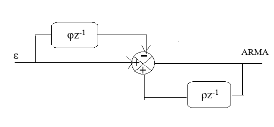

Instructions for Wide Sense Stationary Simulator when the system is ARMA
Step 1: Click on "Generate WSS" to generate a wide-sense stationary (WSS) signal, whose mean and autocorrelation do not change over time.
Step 2: Click on "Generate CIR" to generate the ARMA filter coefficients.
Step 3: Click on "Generate Output" to produce the output signal after filtration.
Step 4: Click on "Calculate Autocorrelation" to verify whether the output signal retains the properties of WSS.
R(τ) represents the autocorrelation function of the signal as a function of the lag τ, where τ = t2 - t1 is the time difference (or lag) between two time points, R(τ) = E[x(t) ⋅ x(t + τ)]
In the context of Wide-Sense Stationary (WSS) signals, the autocorrelation R(t1, t2) represents the statistical measure of how the signal at one time point t1 correlates with the signal at another time point t2, R(t1, t2) = E[x(t1) ⋅ x(t2)]

Calculate Autocorrelation of the Input Signal Over time
R(τ) represents the correlation of the signal with itself as a function of the time lag (τ).
R(t1, t2) represents the correlation between two points t1t1 and t2t2 in the signal.
Rx(τ)
Autocorrelation Results
Lag
Autocorrelation
Rx(t1,t2)
Autocorrelation Results
t1
t2
Autocorrelation (Rx)
Calculate Autocorrelation of the Output Signal Over Time
R(τ) represents the correlation of the signal with itself as a function of the time lag (τ).
R(t1, t2) represents the correlation between two points \( t_1 \) and \( t_2 \) in the signal.